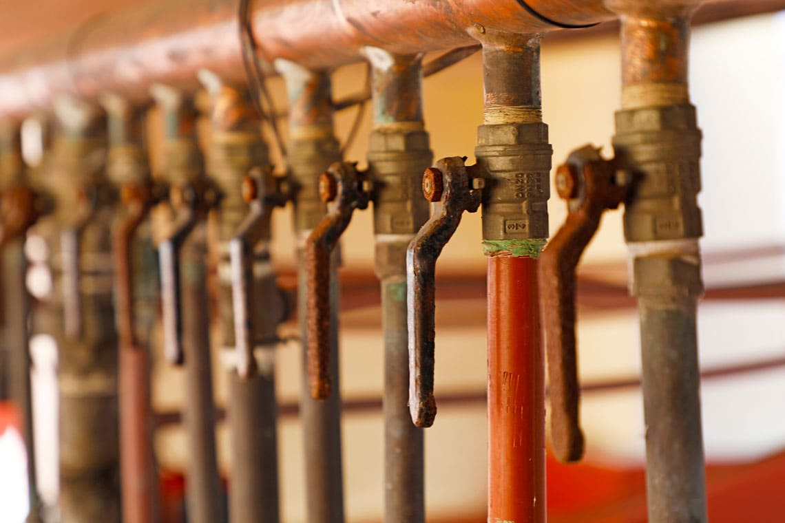
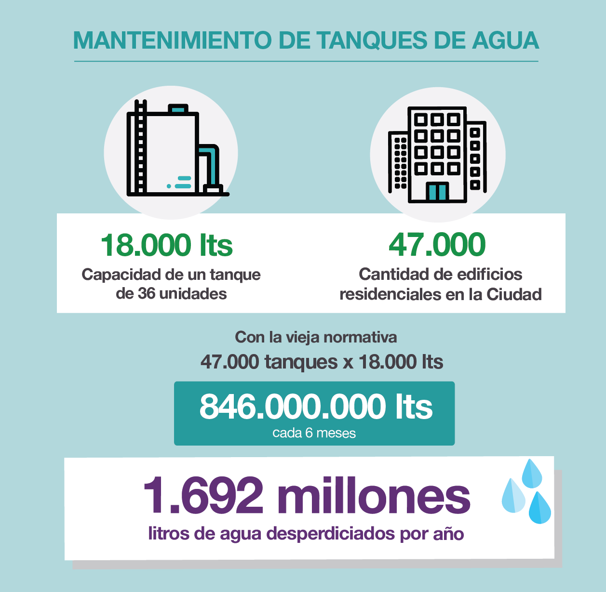
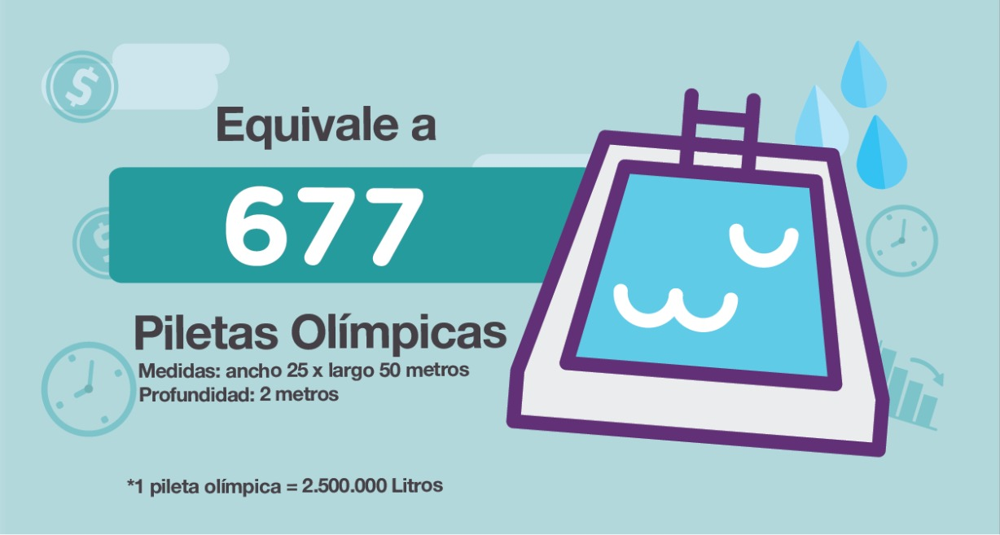

Ya no será necesario tirar 1692 millones de litros de agua potable cada año de los edificios porteños de toda la ciudad, una práctica que venía desarrollándose sin antes realizar un análisis del contenido para conocer el estado de situación. Una reglamentación del año 1991 obligaba a vaciar el tanque semestralmente, por esa imposición del Estado, los consorcios además, debían pagar un procedimiento de limpieza con un costo promedio de 16.360 pesos anuales para un edificio tipo de 36 unidades.
Desde hoy la Ciudad cambió el procedimiento mediante el cual se verifica el estado del tanque y la calidad del agua fijando un control obligatorio anual a través de un exámen físico - químico y otro bacteriológico que, en caso de dar bien, evitará un desperdicio de agua equivalente al contenido de 677 piscinas olímpicas (50 x 25 metros y 2 metros de profundidad). Para tomar dimensión del espacio físico que ocupan, podríamos cubrir la distancia de norte a sur de toda la Ciudad Buenos Aires, unos 33.8 kilómetros, unas 338 cuadras.
“Analizamos todas las normativas y nos encontramos disposiciones obsoletas y contrarias al cuidado de recursos y medioambiente”, Facundo Carrillo.
“Analizamos todas las normativas que rigen para los consorcios y nos encontramos con disposiciones que son obsoletas y contrarias al cuidado de recursos de los vecinos y el medioambiente” afirmó Facundo Carrillo, secretario de Atención y Gestión Ciudadana, al tiempo que explicó: “Lanzamos un plan de 14 medidas con el objetivo de mejorar los controles y cuidar un recurso imprescindible como lo es el agua potable contenida en todos los tanques de los edificios de la Ciudad”.
La nueva ley, además, establece para el consorcio de propietarios y/o administrador de de Propiedad Horizontal, la obligación de controlar y revisar en forma periódica las instalaciones, a fin de conservar, mantener y asegurar la hermeticidad del agua, garantizando las condiciones necesarias para consumo humano.

En el supuesto que del resultado de los análisis surja que la calidad del agua potable para consumo humano no se ajusta a los estándares establecidos por el Ente Regulador de Agua y Saneamiento (ERAS), dentro de los quince (15) días corridos, el consorcio de propietarios y/o su administrador, debe proceder a limpiar y desinfectar los tanques conforme la normativa vigente y aplicable a la materia.
"Desde la Legislatura porteña trabajamos para la sanción de las propuestas presentadas por el Gobierno de la Ciudad con el fin de reducir las expensas”, afirmó Daniel Del Sol, presidente de la Comisión de Legislación General y agregó: “aprobamos la modificación que refiere a la desinfección de tanques de agua, que podrá realizarse como mínimo una vez al año, con la salvedad que cada consorcio determinará un plan de limpieza, mantenimiento y desinfección del tanque, constatado en el Libro de Actas correspondiente. Es decir, los vecinos decidirán, según los análisis que realicen, si necesitan mejorar la calidad del agua".
Tal como lo afirma el diputado, el texto legal en su artículo segundo prevé que el consorcio de propietarios y/o administrador de inmuebles afectados al régimen de Propiedad Horizontal, determina un plan destinado a la limpieza, mantenimiento y desinfección de tanques, así como el cuidado del agua de su propiedad, debiendo constar en el Libro de Actas de Asamblea la periodicidad en que dichas tareas deben ser llevadas a cabo. La importancia del mismo radica en que los propietarios pueden determinar una menor periodicidad si así lo quisieran.

En la Ciudad existen unos 47 mil consorcios con carácter de vivienda cuyos edificios tienen tanques con una capacidad en promedio de entre 15 mil y 30 mil litros dependiendo la cantidad de unidades funcionales. En general, se estima que un edificio promedio en la Ciudad tiene 36 unidades y un tanque de 18 mil litros. El viejo mantenimiento obligaba a desperdiciar 36 mil litros anuales como mínimo (el proceso de limpieza insume una cantidad de agua superior) y erogar un gasto de mantenimiento de unos 16.360 pesos en promedio.
Este cambio en el proceso permitirá ahorrar en promedio unos 8100 pesos por cada edificio y reducir enormemente el impacto ambiental cuidando un recurso natural que es imprescindible para todos. Es la sexta medida que la Ciudad aplica, en el marco de un plan de 14 que buscan mejorar los controles y reducir los costos que pagan los vecinos en las expensas. Por las seis medidas ya implementadas los consorcios pueden ahorrar hasta 49.100 pesos en el año.

Una vez que se complete el plan con las 14 medidas, cada vecino que viva en un edificio tipo de 10 pisos con 20 unidades funcionales, por ejemplo, podrá ahorrar 4.900 pesos por año de expensas, lo que equivale a una expensa menos al año. El ahorro global anual para el consorcio se calcula en 98.000 pesos.
Los consorcios asimismo, podrán definir un plan destinado al mantenimiento y desinfección de tanques que suponga un periodicidad menor. En tal caso, deberán hacer constar en el Libro de Actas de Asamblea la periodicidad en que dichas tareas deben ser llevadas a cabo.
Volver